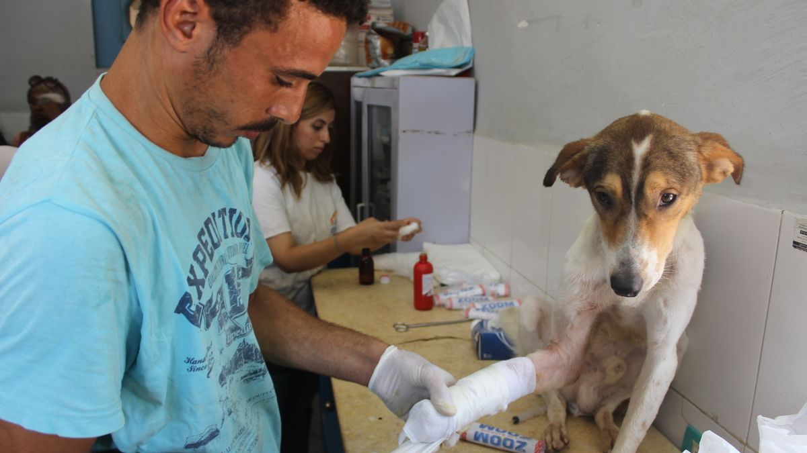
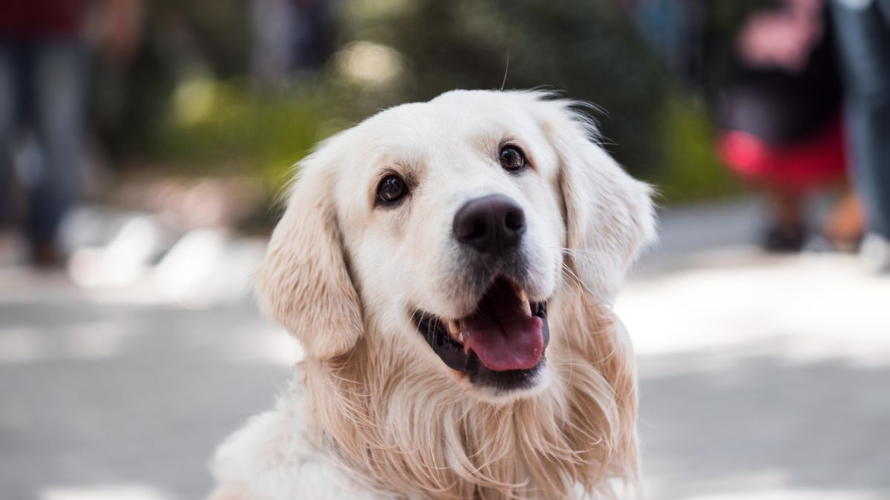

대기실에서 길어진 설명
입양 12일 차, 첫 검진을 맞은 집에서 보호자가 15분 동안 '언제부터인지'를 설명하느라 대기 시간이 길어졌습니다. 메모는 없었고, 입양 전 건강 상태도 구체적으로 몰랐습니다. 수의사는 차분히 들었지만, 검진 전에 확인할 항목을 하나씩 되묻는 시간이 늘어났습니다.
이 글은 진단·치료·접종 스케줄을 대신 정해 주지 않습니다. 첫 방문 전에 챙길 물건·연습·메모·당일 루틴을 정리합니다. 집에서 무엇을 볼지는 병원 가기 전 관찰 글을 함께 보세요.
왜 7~10일 전후에 잡을까
입양 직후 48시간은 환경 적응에 쓰이는 경우가 많습니다. 너무 이른 방문은 스트레스만 키울 수 있고, 2주 이상 미루면 입양 전·후 상태 비교가 어려워집니다. 많은 입문 가정이 7~10일 차에 첫 검진을 예약합니다.

예약은 입양 3일째쯤 전화로 잡고, 그 전까지는 관찰 메모만 쌓는 편이 낫습니다. 급한 출혈·호흡 이상·식욕 50% 이상 2일 감소 등은 일정과 관계없이 당일·응급 연락을 검토하세요.
가져갈 것 5가지
- 7일 관찰 메모: 식욕·배변·수면·활동·특이사항(날짜별 3줄)
- 입양 서류: 보호소·브리더 제공 건강·접종·구충 기록(없으면 '미확인'이라고 적기)
- 이동장+익숙한 담요: 문이 열린 동굴로 쓰던 담요 1장
- 간식 소량: 대기·검진 후 1~2개, 첫날 새 간식은 피하기
- 목줄·하네스: 병원 주차장~대기실 구간(이동장 밖 이동 시)

사료 그램·브랜드·급여 시간도 메모에 넣으세요. 체중은 집 저울로 2회 재어 평균을 적어 두면 검진 전 비교에 도움이 됩니다.
이동장 3분 연습
검진 5~7일 전부터 시작합니다. 하루 2회, 2분만 반복하세요.
- 1~2일: 이동장 안에 간식 1개 던지기, 문은 열린 채
- 3~4일: 안에 들어가면 문 10초 닫기, 바로 열기
- 5~7일: 문 닫은 채 거실 1바퀴(30초), 집 안만
- 검진 전날: 차에 시동만 걸고 1분, 실제 운전은 짧게

억지로 넣으면 다음 방문이 더 어려워질 수 있습니다. 거부하면 오늘은 문 앞 간식만 하고 끝내세요. 고양이는 이동장을 평소 캣타워 옆에 두고 하루 종일 열어 두는 집도 많습니다.
병원에서 물어볼 질문 7개
스마트폰 메모에 미리 적어 가세요. 수의사마다 답이 다를 수 있으니, 우리 집 상황에 맞는지 되물어도 됩니다.
- 입양 전 건강·접종 기록을 보면 빠진 항목이 있나요?
- 현재 식욕·배변 패턴을 봤을 때 당장 집에서 더 볼 것은?
- 체중·연령 기준 권장 급여량·급여 횟수는?
- 구충·심장사상충 등 일정은 어떻게 잡으면 좋을까요?
- 중성화 시기·수술 전 준비가 필요한가요?
- 응급 시 연락할 병원·야간 진료 안내가 있나요?
- 다음 검진은 언제·어떤 항목으로 오면 좋을까요?
답은 병원 안내 카드나 메모 앱에 그대로 복사해 두세요. 가족이 함께 돌보면 단톡방에 공유하면 누락이 줄어듭니다.
검진 당일 루틴
당일은 변화를 최소화합니다.
- 급여: 평소와 같은 시간·양. 검진 직전 1시간 공복 권유가 있으면 병원 안내를 따르세요
- 산책: 평소의 절반 또는 실내 배변만. 검진 전 격한 놀이는 피하기
- 출발: 예약 10분 전 도착, 대기실 소음이 크면 차 안에서 잠시 대기
- 귀가 후: 30분 조용히, 바로 산책·목욕·새 간식 금지
- 기록: 검진 내용·다음 일정·처방(있을 경우)을 당일 저녁 한 장에 정리

검진 후 하루 식욕 저하·잠이 늘면 흔할 수 있습니다. 48시간 지속되면 메모와 함께 전화 상담을 검토하세요.
주간 루틴 체크
첫 병원 방문은 '잘 버티기'보다 메모·이동장·당일 루틴이 절반입니다. 검진 1주 전부터 아래 순서로 반복하세요.
월: 입양 서류·관찰 메모를 한 폴더(또는 앱)에 모읍니다. 화: 이동장 문 앞 간식 2분. 수: 메모에 체중 1회 추가. 목: 이동장 문 10초 닫기 연습. 금: 병원 질문 7개 메모 확인. 토: 차 안 1분(또는 집 안 30초 이동). 일: 가방에 담요·간식·목줄만 미리 넣기.
가족 담당이 나뉘어 있으면 '검진 동행 1명'을 정하세요. 대기실에서 두 사람이 번갈아 안으면 오히려 불안이 커질 수 있습니다.
고양이는 검진 전날 화장실을 비우고, 귀가 후 바로 캣타워·화장실 위치를 원래대로 두세요. 개는 대기 중 짖음이 나올 수 있으니, 짧은 간식·물은 허용하되 새 간식은 피합니다.
이번 주 첫 병원 준비 체크리스트입니다. 항목 3개만 골라 2주 반복해도 충분합니다.
- 7일 관찰 메모(식욕·배변·수면·활동)를 준비했습니다.
- 입양 서류·접종 기록을 폴더에 모았습니다.
- 이동장 간식 연습을 하루 2회 2분 했습니다.
- 병원 질문 7개를 메모에 적었습니다.
- 검진 당일 산책·급여 시간을 평소와 같게 유지했습니다.
- 검진 동행 담당 1명을 정했습니다.
- 귀가 후 30분 조용히, 새 간식·목욕을 미뤘습니다.
- 검진 내용·다음 일정을 당일 저녁 한 장에 정리했습니다.
첫 검진은 완벽한 순종이 아니라, 다음 방문이 덜 힘들게 만드는 연습입니다. 이동장에서 10초만 조용해도 충분한 출발점인 경우가 많습니다.
입양 첫 주 루틴은 첫 주 점검 글과 맞추세요. 검진 주에 사료·용품을 동시에 바꾸지 않습니다.
한 줄 정리
메모 없이 간 보호자보다, 메모가 엉망인 보호자가 상담은 더 빨리 끝내는 경우를 봤습니다. 날짜만 맞아도 반은 옵니다.
한 줄로: 7일 메모, 5일 이동장, 당일 루틴 그대로. 오늘은 메모 항목 3개만 정해 보세요.
이 글은 의료 판단을 대체하지 않습니다. 급한 증상은 예약을 기다리지 말고 병원에 연락하세요.
초보자가 자주 실수하는 포인트
- 관찰 메모 없이 첫 검진
- 검진 당일 새 하네스·사료·간식 동시 교체
- 이동장 첫 사용이 검진 당일
- 검진 직후 1시간 산책·목욕
- 검진 내용을 구두로만 기억
체크리스트
- 7일 관찰 메모 준비
- 입양 서류·접종 기록 챙기기
- 이동장 5일 전 연습
- 질문 7개 메모
- 귀가 후 30분 조용히
자주 묻는 질문
- 입양 전날 검진을 잡아도 될까요?
- 이동·환경 변화 직후라 스트레스가 클 수 있습니다. 급하지 않다면 3~7일 관찰 후 잡는 집이 많습니다. 출혈·호흡 이상 등은 즉시 연락을 검토하세요.
- home-observation-habits 글과 무엇이 다른가요?
- 관찰 글은 집에서 무엇을 볼지·어떻게 기록할지 다룹니다. 이 글은 그 메모를 들고 첫 병원에 갈 때 챙길 것·연습·당일 루틴을 다룹니다.
- 고양이도 이동장 연습이 필요한가요?
- 예. 문이 열린 이동장을 평소 캣타워 옆에 두고, 안에 간식을 넣는 방식부터 시작하세요. 억지로 넣기 전에 5일 연습이 도움이 되는 경우가 많습니다.
이 글은 초보자 기준으로 이해하기 쉽게 정리되었으며, 내용은 운영 과정에서 순차적으로 보완될 수 있습니다. 수의사 등 전문가의 진단·처치를 대체하지 않습니다.